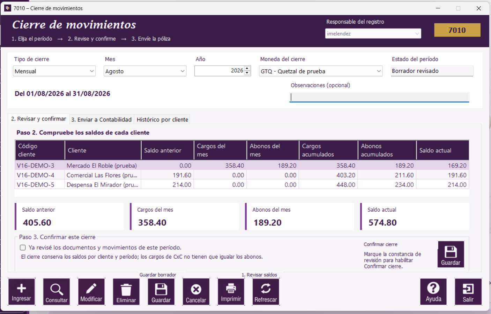

|   |
| |

La tabla, los totales, la constancia y el botón Confirmar cierre están en esta pestaña. Pulse la imagen para ampliarla.
Los cargos de CxC no tienen que igualar los abonos: la diferencia cambia el saldo. La igualdad de Debe y Haber se comprueba después, en la póliza.
Si no hay movimientos ni saldos para la moneda y el mes elegidos, la tabla puede estar vacía. Verifique el período antes de confirmar un cierre sin movimientos. Si falta un mes anterior, cierre los meses en orden.
| Botón | Resultado |
|---|---|
| Guardar, en la barra inferior | Conserva las observaciones como borrador. El período sigue abierto y todavía no puede enviarse la póliza. |
| Confirmar cierre, dentro de esta pestaña | Confirma el período revisado. Después puede ver la partida y, si corresponde, enviarla a Contabilidad. |
| Consulta de nuevo los saldos del período seleccionado. |